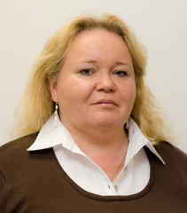

Štefan Korečko (* 13. 7. 1978) pôsobí od roku 2001 na Katedre počítačov
a informatiky Fakulty elektrotechniky a informatiky Technickej
univerzity v Košiciach. Vo svojej výskumnej a vývojovej činnosti sa
zameriava na metódy overovania korektnosti softvérových systémov a
modelovanie a simuláciu systémov s diskrétnymi udalosťami. V posledných
rokoch sa tiež venuje problematike využitia počítačových hier na
riešenie serióznych úloh (tzv. games with purpose). Väčšina
softvérových riešení, ktoré vznikli pod jeho vedením je postavená na
otvorenom softvéri.
Štefan Korečko (* 13. 7. 1978) pôsobí od roku 2001 na Katedre počítačov
a informatiky Fakulty elektrotechniky a informatiky Technickej
univerzity v Košiciach. Vo svojej výskumnej a vývojovej činnosti sa
zameriava na metódy overovania korektnosti softvérových systémov a
modelovanie a simuláciu systémov s diskrétnymi udalosťami. V posledných
rokoch sa tiež venuje problematike využitia počítačových hier na
riešenie serióznych úloh (tzv. games with purpose). Väčšina
softvérových riešení, ktoré vznikli pod jeho vedením je postavená na
otvorenom softvéri.
 RNDr. Ján Buša, CSc. (na fotke vľavo) absolvoval vysokoškolské a doktorandské štúdium v odbore Aplikovaná matematika
na fakulte Numerickej matematiky a kybernetiky Moskovskej štátnej univerzity. Od decembra 1986 je
pracovníkom Katedry matematiky a teoretickej informatiky FEI TU v Košiciach (je to jej súčasný názov).
Obľubuje matematiku, najradšej aplikovanú. Záľuby: knihy (najradšej o vede), futbal (menšieho rozsahu),
pedagogika.
RNDr. Ján Buša, CSc. (na fotke vľavo) absolvoval vysokoškolské a doktorandské štúdium v odbore Aplikovaná matematika
na fakulte Numerickej matematiky a kybernetiky Moskovskej štátnej univerzity. Od decembra 1986 je
pracovníkom Katedry matematiky a teoretickej informatiky FEI TU v Košiciach (je to jej súčasný názov).
Obľubuje matematiku, najradšej aplikovanú. Záľuby: knihy (najradšej o vede), futbal (menšieho rozsahu),
pedagogika.
 Michal Kohútek
Michal Kohútek
Magistersky student Aplikovanej Informatiky na Univerzite Konstantina
Filozofa v Nitre. Uz v skorom veku prepadol vasni ku GNU/Linux a
open-source komunite, co ho doviedlo k studiu informatiky. Medzi jeho
posledne projekty patri modernizacia kolkarne v Moravskom Lieskovom za
pouzitia Raspberry Pi a Arduina.
Bc. Terézia Mézešová
Aktuálne pracujem ako Application Security Specialist v Siemens Healthcare, kde sa venujem testovaniu bezpečnosti applikácií. Tiež dokončujem štúdium kybernetickej bezpečnosti na Technickej univerzite v Taline. Spolupracovala som na príprave cvičenia pre Letnú školu kyberkriminality organizovanú UPJŠ v Košiciach.
Mariana Hurná
koordinátorka IT, Mestský úrad Prešov
Vysokoškolské štúdium absolvovala s vyznamenaním na Technickej univerzite v Košiciach v odbore Ekonomika a riadenie priemyslu.
Pôsobila ako samostatný programátor – analytik v Podniku racionalizácie riadenia poľnohospodárstva a výživy, neskôr v Krajskom pamiatkovom ústave a potom v Nemocnici s poliklinikou v Prešove.
Od roku 1996 pracuje ako informatik a správca informačných systémov na Mestskom úrade v Prešove. Počas 20-ročnej praxe zastávala pozíciu vedúcej IT a projektového manažéra pre IKT.
V rokoch 2008, 2009 a 2012 bola vyhodnotená ako Najlepší informatik samospráv Slovenska. V ostatných rokoch opätovne získala popredné miesto v tejto súťaži. Spolupracuje s Úniou miest Slovenska ako expert na problematiku samosprávnych informačných systémov, kde predkladá a aplikuje skúsenosti získané v praxi pri implementácii projektov IKT. Angažuje sa v oblasti otvoreného a jednoduchého poskytovania údajov verejnosti.
Mariana Hurná buduje a rozširuje Integrovaný informačný systém samosprávy mesta Prešov od roku 2000. Ten v súčasnosti zahŕňa 56 modulov v dokumentačnom, administratívnom, evidenčnom, ekonomickom, geografickom a eGovernment subsystéme pre viac ako 400 klientov a 32 organizácií mesta.
Ferdinand Majerech
Zacal som moddingom hier a od postupne som sa presunul na open source vyvoj.
Prezil som informatiku na UPJS a teraz robim v ESETe low-level veci na ARM
doskach. Maintainujem niekolko kniznic v jazyku D, bavi ma graficke
programovanie, herny vyvoj a snazim sa vyzmykat maximum z dostupneho
hardwaru.
Pohybujem sa okolo hackerspace v01d a vypomaham pri organiacii gamedev
sutaze
IHRA.